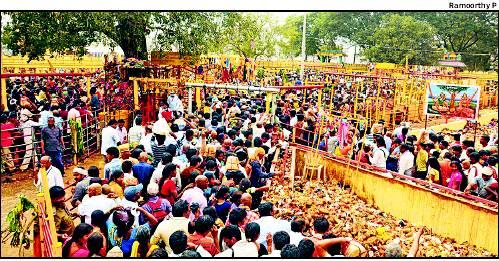

|
|
Warangal |
|

Sammakka Saralamma Jatara or Medaram Jatara is a tribal festival of honouring the goddesses celebrated in the state of
Telangana, India.The Jatra begins at Medaram in Tadvai Mandal in Warangal district.[1] It commemorates the fight of a mother
and daughter, Sammakka and Saralamma, with the reigning rulers against an unjust law. It is believed that after Kumbha Mela,
the Medaram jatara attracts the largest number of devotees in the country. An estimated 10 million people gathered in 2012
It is celebrated in Medaram during the time the goddesses of the tribals is believed to visit them. Medaram is a remote place in
the Eturnagaram Wildlife Sanctuary, a part of Dandakaranya, the largest surviving forest belt in the Deccan.
People offer bangaram/gold (jaggery) of a quantity equal to their weight to the goddesses and take holy bath in Jampanna Vagu
(stream).It is a festival with no vedic or brahmanic influence.
Until 1998, the only way to reach Medaram was by a bullock cart. In 1998 the state government declared the 1000-yr old festival as
official and laid down a motorable road.
In 2008, nearly 8 million people were estimated to have attended the festival. This fair is said to be the largest repeating
congregation of tribal communities in the world. The traffic jam during the festival sometimes goes as far as 60 km on the
Warangal highway.
In 2012, approximately 1 crore people would attend the world's largest tribal festival.
Jampanna vagu is a tributary to River Godavari. According to the history, Jampanna is the tribal warrior and the son of Tribal Goddess Sammakka. The Jampanna vagu took his name as he died in a battle fighting against Kakatiyan Army in that stream .The Jampanna vagu is still red in colour marked with the blood of Jampanna (Scientifically the red colour of the water is attributed to the soil composition). Tribal's believe that taking a holy dip in the red water of Jampanna Vagu remembers them the sacrifice of their gods who save them and also induces courage into their souls.
once in a two years in the month of Feburary
5 hours Hour
95 Kms
Etunagaram
Cab / Bus